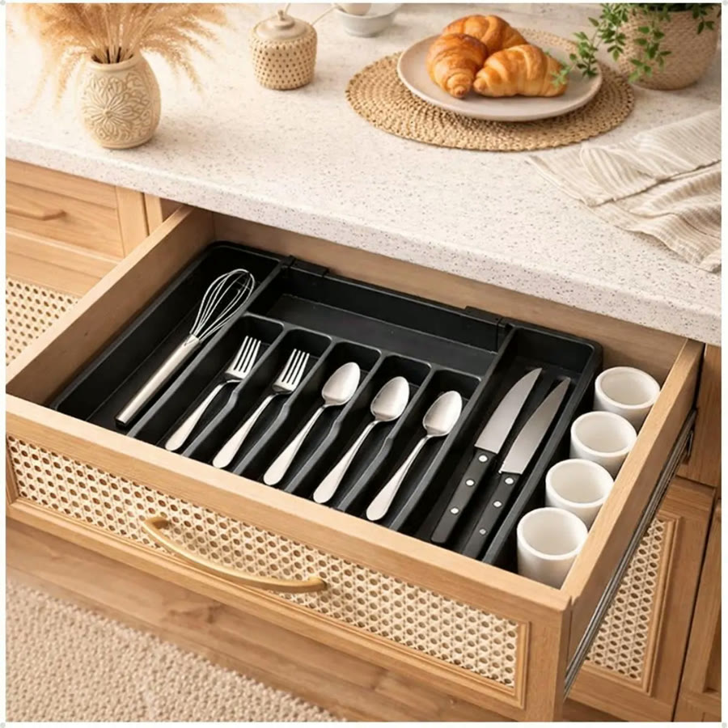
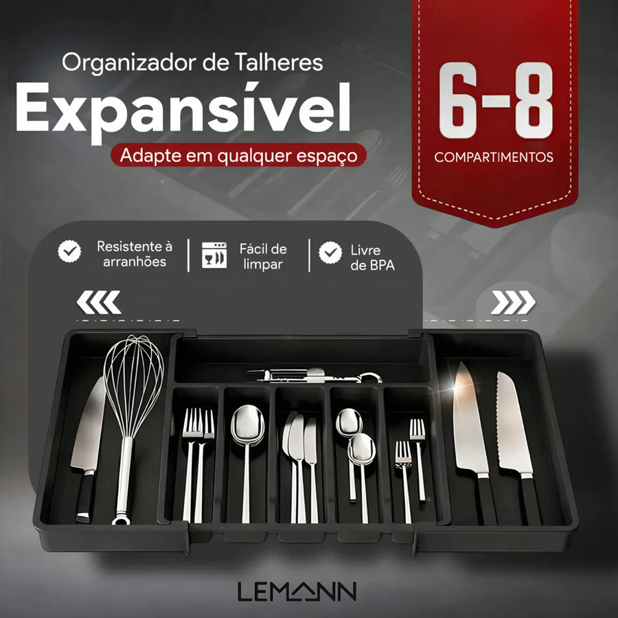
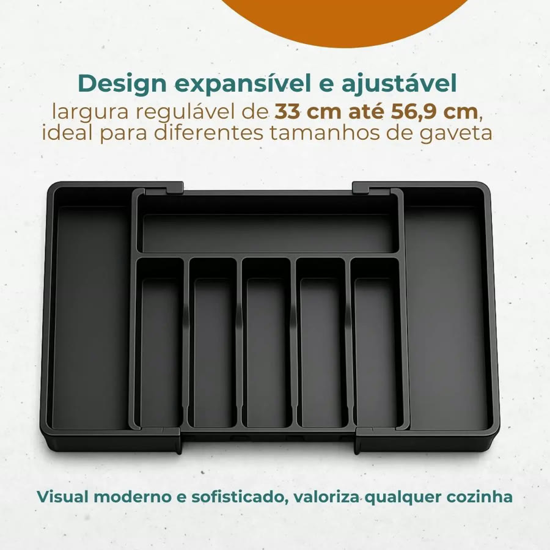
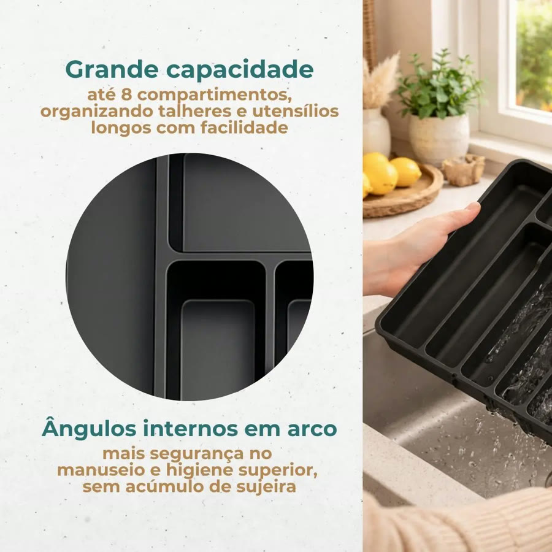
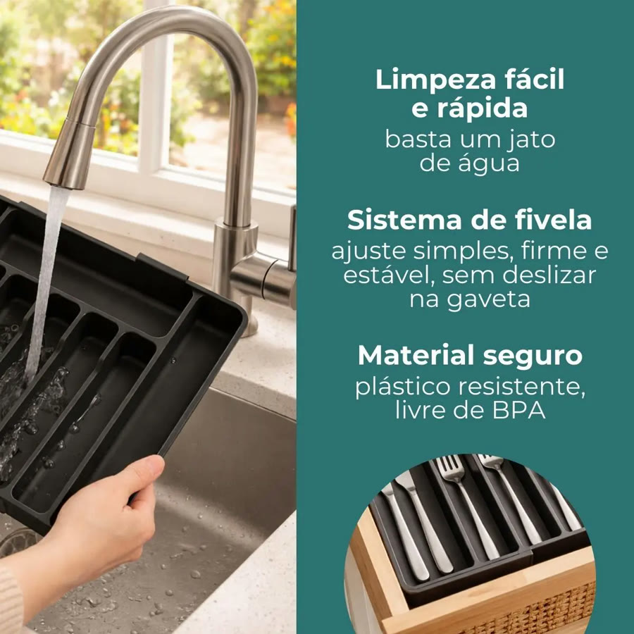
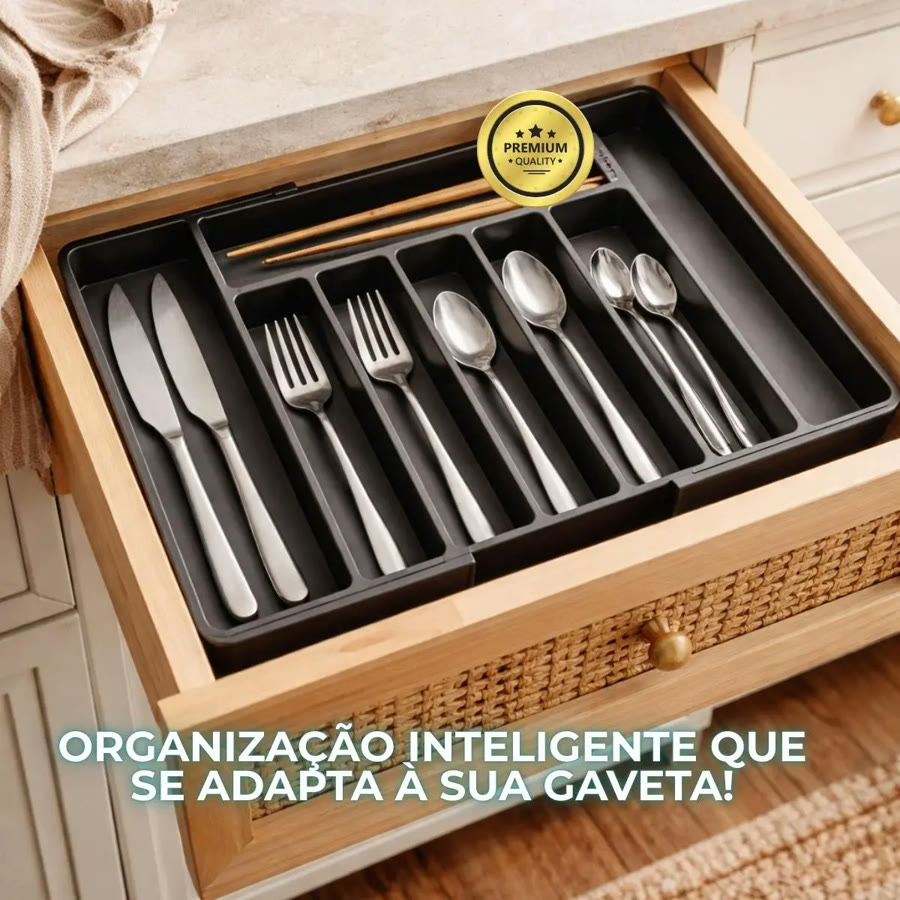
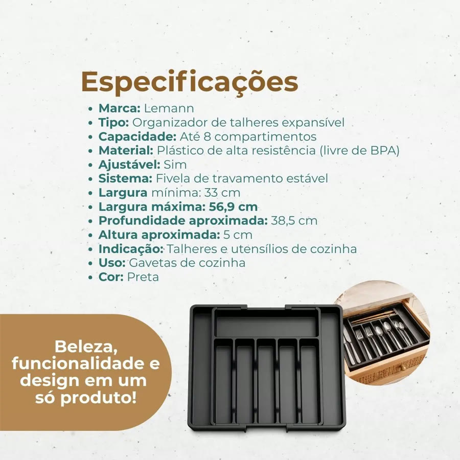

Achado nº 21
Porta-talheres expansível para gaveta








O que diz a página oficial do produto
- Organizador de talheres para gaveta que abre para os lados e se ajusta à largura da gaveta
- Fechado, tem 6 compartimentos; aberto, passa a ter 8
- A largura vai de cerca de 33 cm, fechado, até 57 cm, aberto; tem 38 cm de profundidade e 5 cm de altura
- Feito de plástico (polipropileno); segundo o anúncio, é livre de BPA e tem cantos arredondados
- Segundo o anúncio, pode ir na lava-louças; não é recomendado para freezer ou micro-ondas
- Pesa 700 g
- No Mercado Livre, tem nota 4,9 com mais de 1.500 avaliações e mais de mil vendidos
Link de afiliado: se você comprar por ele, a Achadaria pode receber uma comissão, sem custo extra para você. Preço, estoque e entrega são da loja e podem mudar; confira lá antes de comprar.